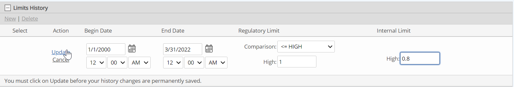

You can set regulatory and internal limits for all types of numeric requirements, with the exception of Auto Parameters and System Variables. Regulatory limits are used to track potential data exceedances. Internal limits can be set to facilitate preventive action when values are approaching the regulatory limits. If data entered or calculated in the system exceeds either limit, a data warning is automatically generated.
To set the regulatory and/or internal limits for a numeric requirement:
Click New to add a new limit history.
To edit an existing limit history, click the Edit link.
Enter a Begin Date for the limit.
This is the date that the limit became applicable (such as the permit date), or the date from which you want to start generating data warnings from the system.
Choose a Comparison option.
The following operators are available:
|
Operator |
Limit definition |
Example |
|
> LOW |
The limit fires if the data value is less than the low. |
pH in outfall must be maintained above 5 |
|
>= LOW |
The limit fires if the data value hits limit value (the low value) or falls below it. |
Stack temperature must be maintained at 120 F or higher. |
|
< HIGH |
The limit fires if the data value is at the limit value or higher |
TCLP value for lead must be less than 5 mg/L. If it is 5 or greater, notify. |
|
<= HIGH |
The limit fires if the data value is greater than the limit value |
CO concentration must be 5 ppm or less. If it is greater than 5, then create a task. |
|
> LOW, < HIGH |
The limit fires if the data value equals either low or high, OR is outside the range defined between the low and high limit values. |
pH must be between 2.5 and 12 for the waste to be considered non-hazardous. |
|
>= LOW, <= HIGH |
The limit fires if the data value is outside the range defined between the low and high limit values. |
BOD must not be less than 200 or greater than 1000 mg/L |
Click Update.
